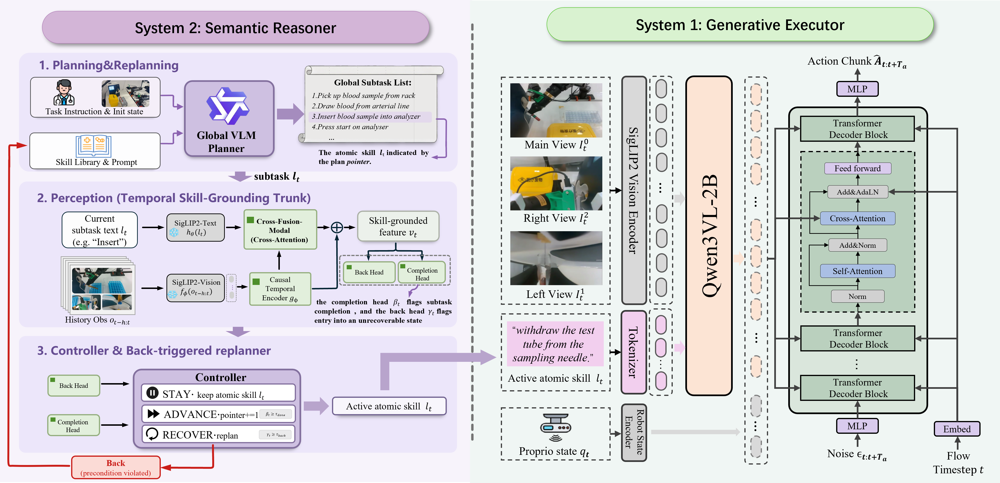

Abstract
Medical laboratory robots must execute contact-rich manipulation while preserving the action order prescribed by operating protocols. End-to-end imitation-learning and vision–language–action policies may confuse visually similar workflow stages, yielding stage-inconsistent actions over long horizons. We present Robo-MLT, a protocol-grounded dual-system framework that separates explicit workflow monitoring from continuous action generation. A frozen vision–language planner uses an initial observation to instantiate an ordered sequence over an atomic-skill library. A lightweight execution monitor then tracks progress with two heads: a completion head advances a plan pointer once the active skill finishes, while a back head detects when human intervention leaves the workspace in a state from which that skill can no longer be completed and triggers bounded, protocol-constrained replanning. Conditioned on the active skill, a Qwen3-VL-based flow-matching executor generates action chunks that an asynchronous runtime streams to the robot at the control-loop rate. Across 20 paired configurations on blood gas analysis and blood sample tube sorting, Robo-MLT carries more samples through their full workflow than four learning-based baselines and raises end-to-end task success rate by 15 percentage points over the strongest hierarchical baseline π0.5 on both tasks. It also recovers from operator intervention during execution and re-targets a sample displaced after the arm begins its approach, whereas a fixed-program pipeline fails to grasp the displaced target.
Method Overview
Robo-MLT comprises two coupled components: System 2, a low-frequency semantic reasoner that monitors execution and maintains the active atomic skill, and System 1, a high-frequency generative executor that maps the active skill to continuous actions. A Qwen3.7-Max planner, queried zero-shot through a public API, reads the task instruction, the instrument protocol, and an initial observation of the workspace, and composes an ordered sequence over a declarative atomic-skill library — seven skills for blood gas analysis and five for tube sorting. Because the plan is instantiated from the observed scene, the planner expands the sequence to the tubes actually present and commits to a feasible order without any gradient update.
System 2 tracks this plan with a multi-frame, dual-head execution monitor. A frozen SigLIP2 image
encoder and a temporal Transformer relate a multi-frame observation history to the text of the active
skill; two lightweight heads then read that shared representation. A completion head advances
the plan pointer once the active skill finishes, while a back head detects when human
intervention has left the workspace in a state from which that skill can no longer be completed. After
temporal debouncing, the monitor returns one of STAY, ADVANCE, or
RECOVER; RECOVER hands control to a replanner bounded by a per-episode call
budget and by hard protocol constraints that reject orderings the procedure forbids. A per-skill stall
timeout triggers the same path when the completion head never confirms a skill as finished.
System 1 executes the active skill with a Qwen3-VL-conditioned controller and a flow-matching action head that generates 30-step action chunks. An asynchronous runtime coordinates the two systems: System 2 updates at 1.33 Hz on a background worker, while System 1 prefetches and blends successive chunks so the controller holds its nominal 20 Hz control-loop rate.

Overview of Robo-MLT. A Qwen3.7-Max planner maps a user command, the corresponding instrument protocol, and an initial scene observation to an ordered sequence of atomic skills. System 2 tracks this plan with a dual-head execution monitor and invokes bounded, protocol-constrained replanning when human intervention disrupts the active skill. System 1 executes the active skill with a Qwen3-VL-conditioned flow-matching policy.
Contributions
- We propose Robo-MLT, a hierarchical framework that separates explicit, low-frequency workflow monitoring from high-frequency generative control for long-horizon medical laboratory manipulation.
- We develop a lightweight, multi-frame execution monitor whose two decision heads determine when the active skill has completed and when human intervention should trigger replanning of the remaining plan.
- We evaluate Robo-MLT on two real-world medical laboratory tasks, reaching end-to-end success rates of 85% and 75% and sample completion rates of 92.50% and 94.38%, which raises the average success rate by 15 points over π0.5.
Experiment Demonstrations
The paper evaluates two disturbance types separately. Moving the target during an isolated
grasp tube from rack skill tests closed-loop re-targeting by the learned executor. Removing the
in-hand sample during the blood gas workflow, shown in the rollout above, instead tests the back head,
RECOVER, and bounded, protocol-constrained replanning by System 2.
Target movement during an isolated grasp skill
Fixed-Program. This is a single-skill baseline for the disturbance study, not a complete long-horizon task baseline. It localizes the target tube in the initial frame, selects the corresponding pre-calibrated waypoint, and executes an approach–grasp–lift sequence in open loop. It succeeds in 20/20 static trials for each tube category, but in 0/20 disturbed trials for each category.
Robo-MLT (ours). The closed-loop learned executor re-targets and grasps the moved tube. Both π0 and Robo-MLT succeed in 20/20 static and 20/20 disturbed trials for each tube category. The comparison therefore isolates closed-loop re-targeting relative to a sense-once pre-programmed trajectory; it does not distinguish π0 from Robo-MLT or establish an advantage of System 2.
Stage-confusion error under perceptual aliasing
Representative perceptual-aliasing failure of end-to-end IL and VLA baselines. At the instrument-docking stage, the observation just after insertion and the observation just before withdrawal are nearly identical. The protocol requires the tube to be discarded once it has been withdrawn, but a policy without an explicit representation of workflow progress cannot tell that the assay is already done: after withdrawing the tube it inserts it again, then withdraws it again, cycling between the two stages instead of advancing to disposal.
BibTeX
@article{robomlt2026,
title = {Robo-MLT: A Dual-System Robotic Medical
Laboratory Technologist for Generative
Long-Horizon Manipulation},
author = {Anonymous},
journal = {Under review},
year = {2026}
}